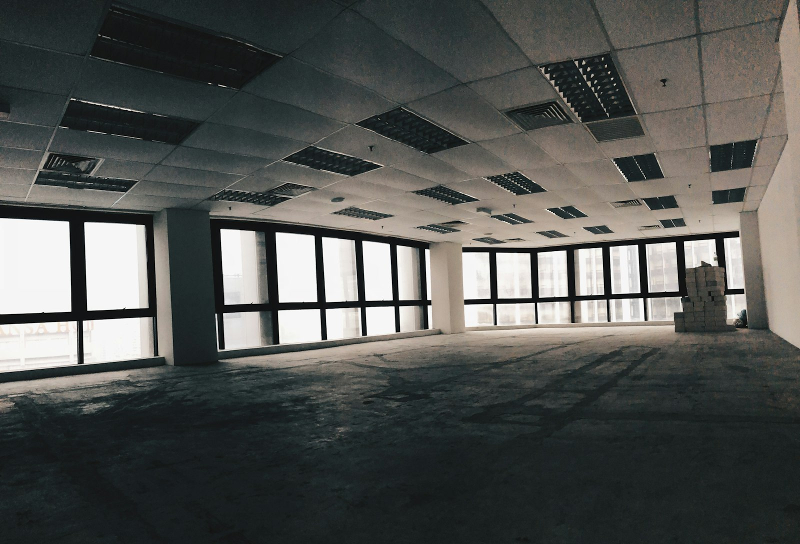
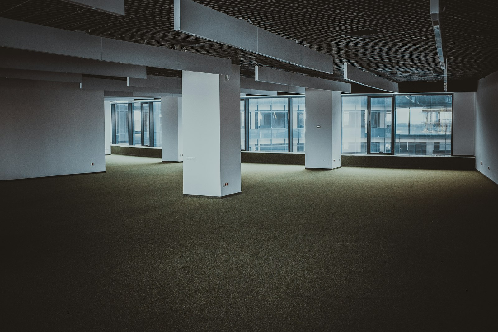
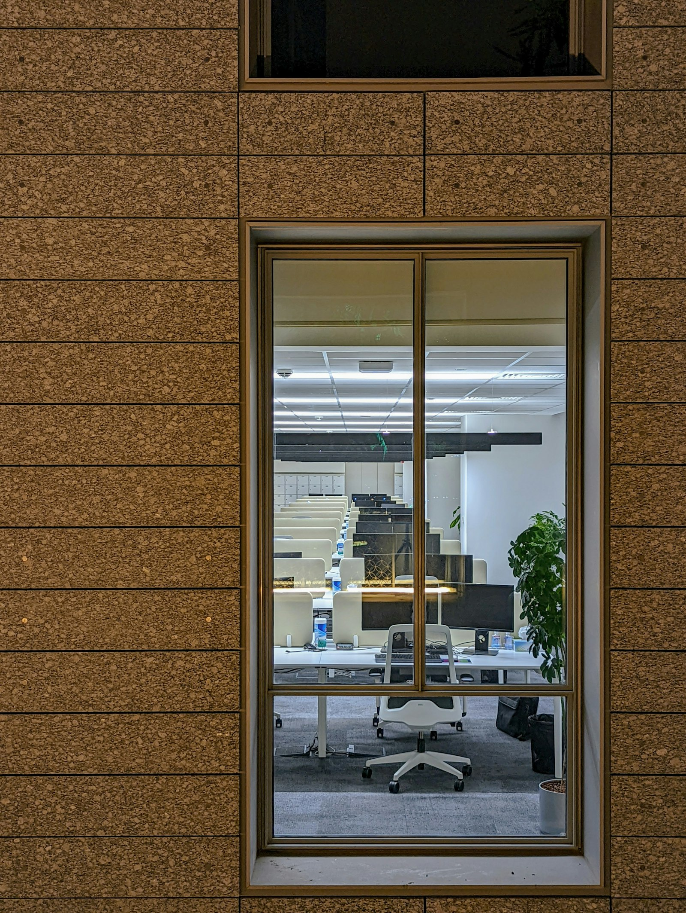

Menara Lumen
After Hours photographed the towers of the Golden Triangle once everyone had gone home, and the series treated cleaning trolleys, standby lights and abandoned chairs as still-life subjects, and every image used only the light the building itself left on, and the project ran as a book and a slow slideshow in the lobby of the very towers it documented, playing to empty escalators while the surau light stayed on down the corridor.
 Next
Next



